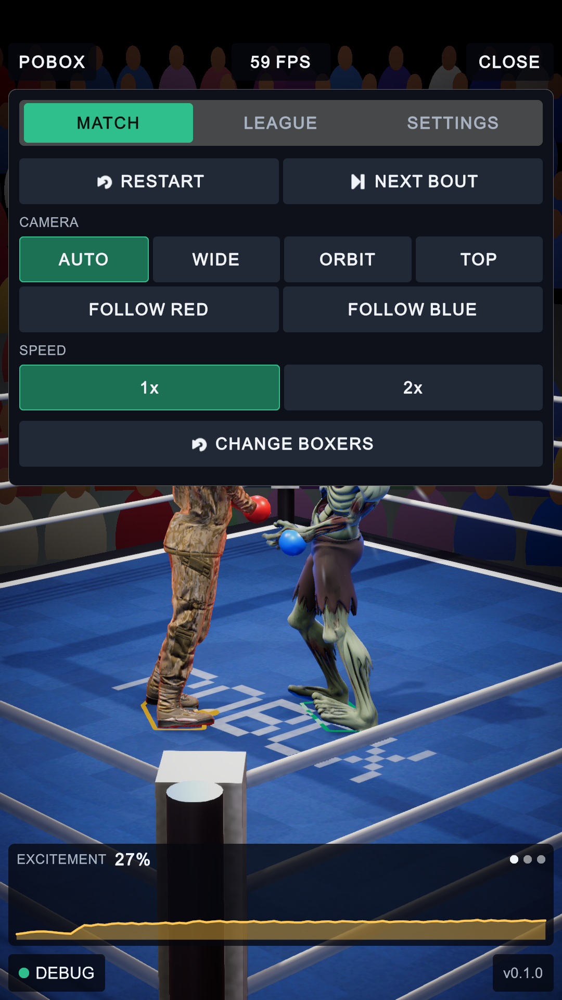
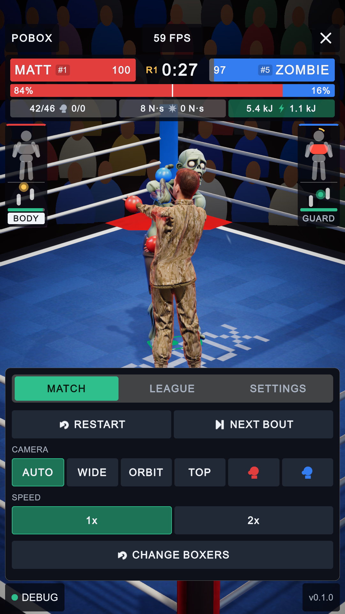
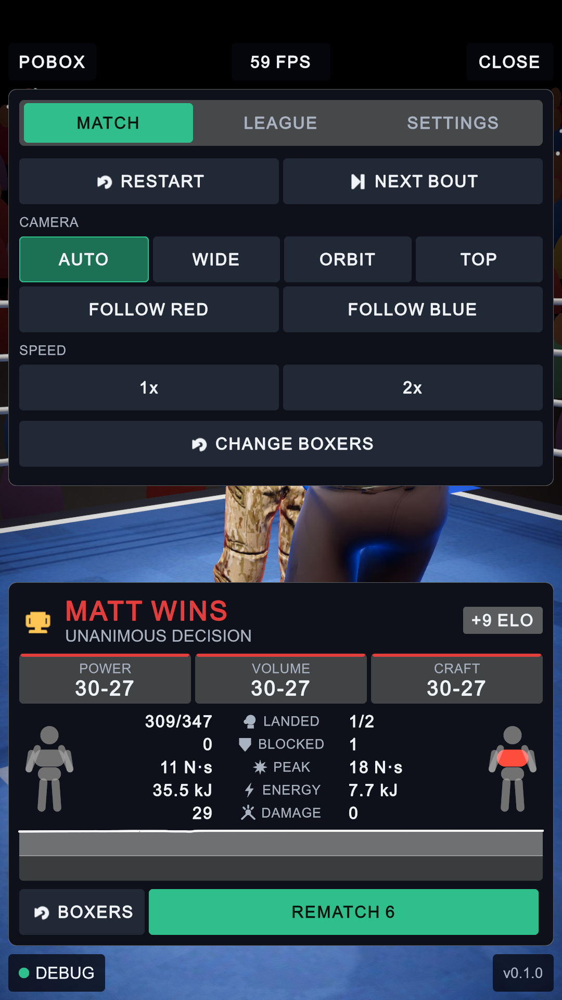
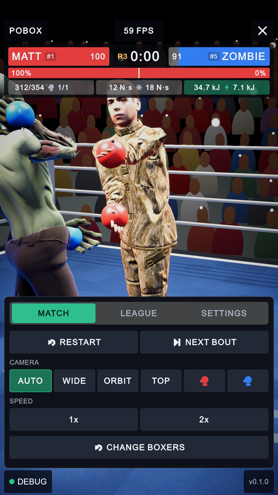
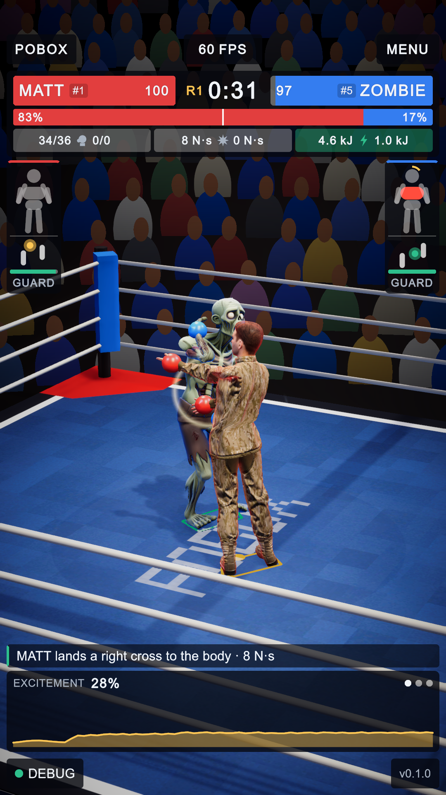
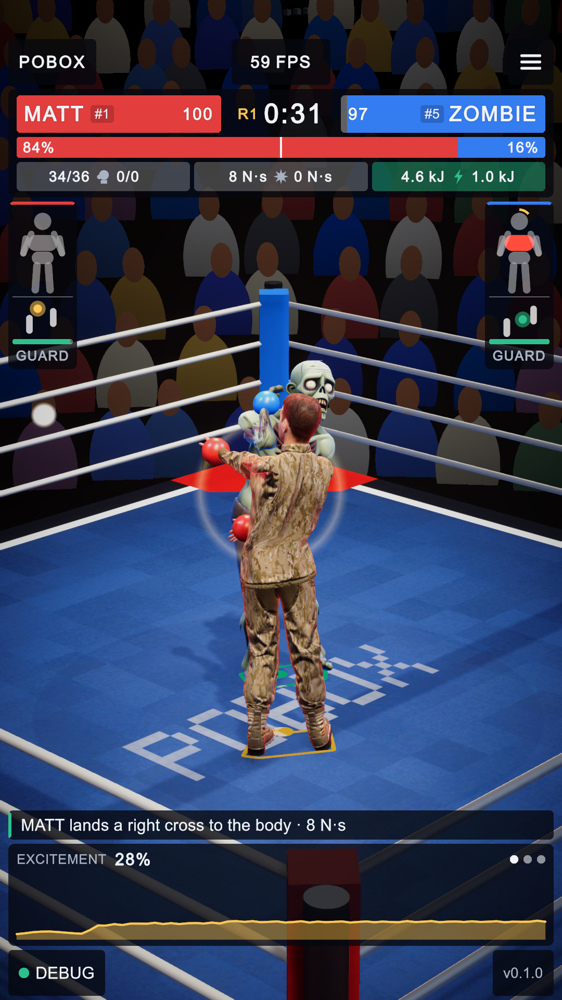
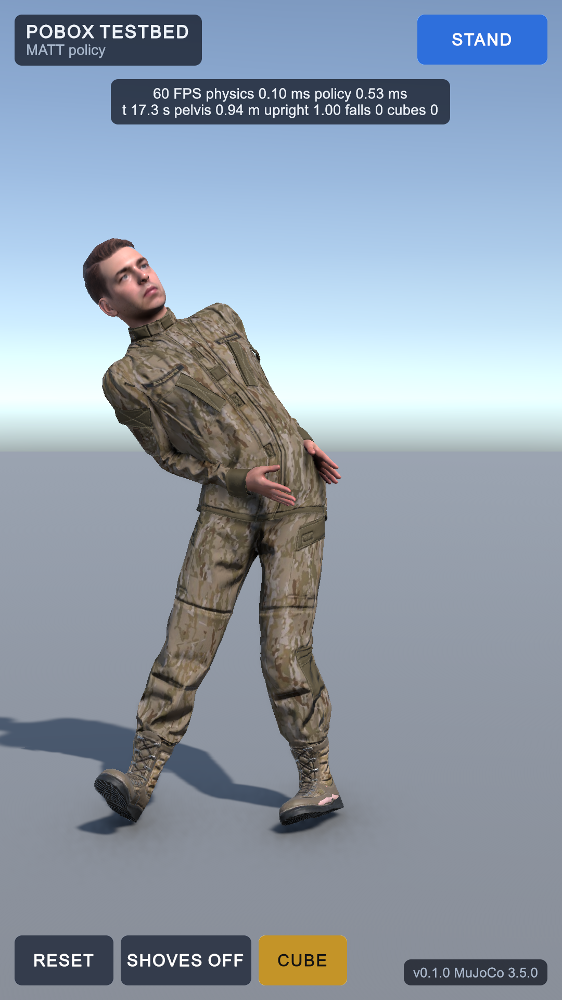
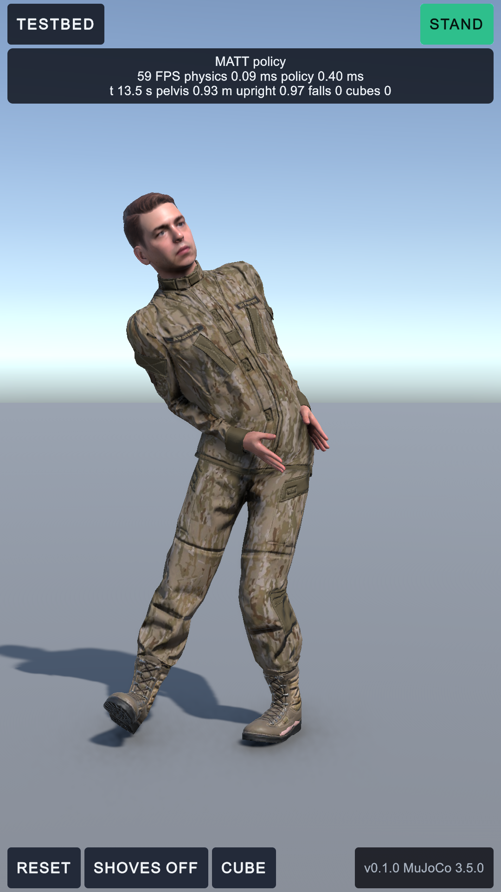

Portrait compaction and integrity: five of a list of ten
3 October 2026 · every picture is the game rendered at 1080 x 1920 with the interface laid over it, Matt against Zombie · numbered pins mark what changed
The list had ten items. Five were already in the game and are checked by the one-screen audit; the other five were the gaps, and those are what was done. All 30 play-mode tests pass (one new), and the audit reports nothing off screen, scrolling, too small or clipped at 720 x 1280, 1080 x 1920 and 1080 x 2400.
| # | Item | State |
|---|---|---|
| 1 | One screen, no scrolling, result and controls on one docked card | Already there |
| 2 | Safe area on tall phones | Already there (not seen on a real notch: no phone has run it) |
| 3 | The five anchors | Already there |
| 4 | State flow from menu to fight to result and round again | Done: three faults fixed, one test added |
| 5 | Icons in place of words | Done: the menu button and the two follow buttons |
| 6 | Overlays as tabbed bottom sheets | Done: the menu is docked at the bottom, one overlay at a time |
| 7 | A clean console | Done: one editor exception and every compile warning removed |
| 8 | Controls within a thumb's reach | Done by 6, plus every frame chip now 88 tall |
| 9 | Debug panel on a HUD icon | Already there (the DEBUG chip, or a tap on the frame rate) |
| 10 | One stylesheet, one set of radii, colours and text sizes | Done: tokens in Theme.uss; the testbed moved onto it |
6 and 8. The menu is a bottom sheet · 5. icons for words


12 34- Docked at the bottom. The sheet used to hang from the top and cover the scoreboard, with RESTART and NEXT BOUT at the far end of the screen from a thumb. It now sits where the result card sits.
- The fight stays in view. The scoreboard and the pods are no longer covered, and the cameras frame the boxers in the band above the sheet. A tap on the picture closes the menu.
- Follow buttons are gloves. FOLLOW RED and FOLLOW BLUE had a row to themselves; they are now a red and a blue glove at the end of the camera row. The sheet is 96 px shorter for it.
- Three bars, and a cross. The word MENU (CLOSE while open) is an icon, in a button 88 px square; it was 72 px tall, under the stylesheet's own rule for anything pressed.
6. One overlay at a time


1- The menu takes the card's place. With a result up, opening the menu left two sheets on screen and a strip of picture between them. The card now steps aside while the menu or the debug panel is open and comes back when it closes; opening one of those two closes the other.
5. The fight screen


12- Menu icon. As above.
- Frame chips. All four are 88 px tall, because two of them (the frame rate and DEBUG) are pressed. Nothing else on this screen moved.
10. The testbed on the game's stylesheet


123- Same chips. The testbed carried its own colours, a 14 px corner and its own sizes in inline styles. It now uses the HUD's classes.
- Readout. The boxer and the timings are one panel, in the scoreboard's place.
- Buttons. The game's buttons; CUBE is no longer amber and the behaviour selector is the accent colour.
In Theme.uss itself nothing should look different: 29 literals became tokens. Corners are 6, 8, 12 or 16; text is 26, 28, 32, 40 or 52 except the walk-on name, the round banner and the count. Four sizes moved onto the scale by 2 to 4 px (boxer names 38 to 40, the clock 56 to 52, the round number and the debug values 30 to 28).
4. State flow
| Fault | What happened | Fix |
|---|---|---|
| Double tap on FIGHT or BOXERS | Each tap asked for the scene again, so the arena (and MuJoCo's model) was built, thrown away and built again | The first tap is the only one (MenuView.Fight, HudView.ToBoxers) |
| An arena with no boxers | The bout threw at its first line, then again every frame once the clock ran out, and the round never ended | Bout.Start stops when a corner is empty; MatchSetup has already said why |
| Menu over a result | Two sheets up at once (pictured above) | HudView.ShowResults |
Checked and found sound: RESTART in the middle of a count, the time scale going back to 1 on the way to the menu, and nothing left of a bout once its scene has gone. The new test TheLoopFromTheMenuToAResultAndBackLeavesNothingBehind walks the whole loop with every scene button tapped twice, and fails on any error in the console.
7. The console
- An exception at every recompile and every Play while a MuJoCo body was selected:
ArgumentException: You can only call GUI functions from inside OnGUI, eight times in this morning's log. It came from the plugin's mouse-spring inspector; one guard, markedPoBox:, inPackages/org.mujoco/Editor/Components/MjMouseSpring.cs. - Compile warnings: 22 to 0. Eleven calls to search functions Unity 6.6 has deprecated (
MjRetrofit.cs,MjParityTests.cs), and the CPU lightmapper, which is deprecated but is the one the bake was measured with: that one is kept and its warning silenced. - Three play sessions (testbed, a full bout, the menu) logged no error, no missing script and no UI Toolkit warning.